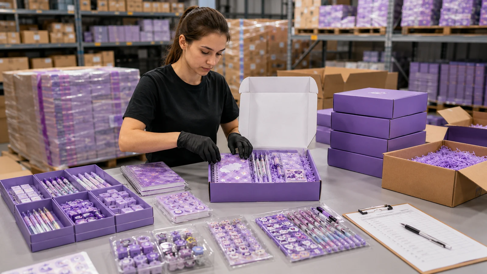
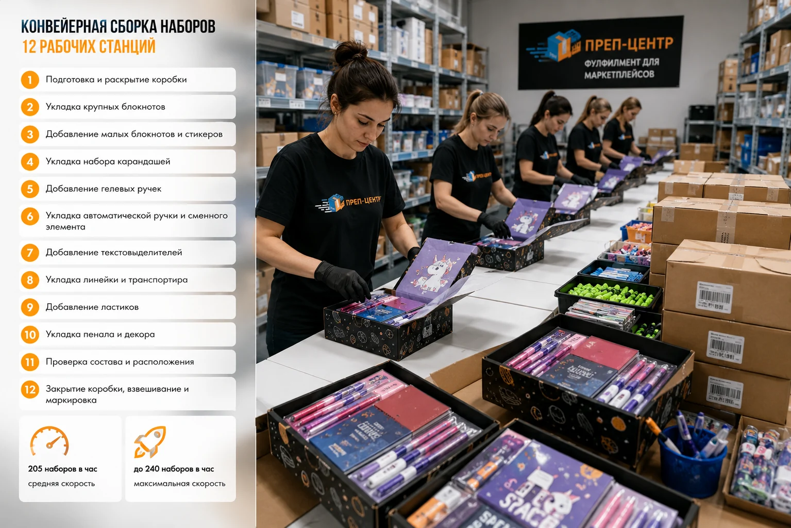
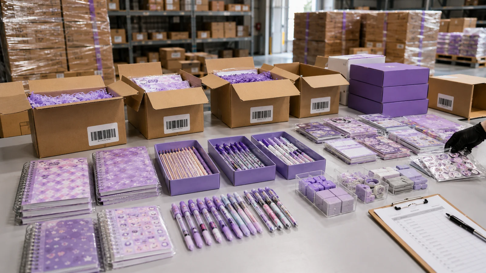
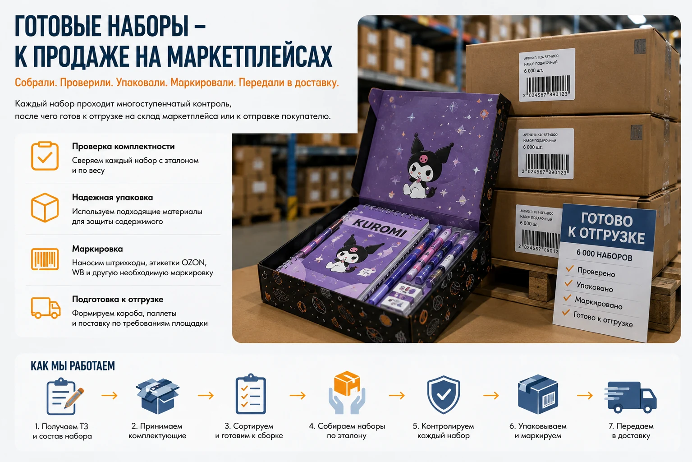

Комплектация и сборка наборов для маркетплейсов
Собираем из отдельных товаров готовые наборы для продажи на Ozon, Wildberries, Яндекс Маркете и других маркетплейсах.
Преп-Центр принимает комплектующие поштучно, сортирует их по SKU, собирает набор по утвержденному образцу, проверяет комплектность, упаковывает и маркирует готовый товар. Работаем как с простыми комплектами из 2–3 позиций, так и с многокомпонентными подарочными наборами.

Какие наборы мы комплектуем
Собираем товарные комплекты и мультипаки практически из любых подходящих для складской обработки товаров.
Например:
- подарочные наборы;
- канцелярские наборы;
- косметические наборы;
- комплекты шампуней и средств ухода;
- наборы бытовых и хозяйственных товаров;
- товары для творчества;
- детские наборы;
- сувенирные комплекты;
- сезонные и праздничные наборы;
- промонаборы;
- мультипаки из нескольких одинаковых товаров;
- комплекты из разных SKU;
- товары с инструкциями, визитками, подарками и рекламными вложениями.
Можно собрать новый товарный комплект из продукции, которая поступает от 1 поставщика или от нескольких производителей отдельными партиями.
Что входит в комплектацию наборов
Состав работ зависит от товара и технического задания клиента.
Преп-Центр может взять на себя весь процесс:
- Приемку комплектующих по грузоместам и поштучно.
- Распаковку транспортных коробов.
- Пересчет и сортировку по артикулам, цветам, размерам или другим признакам.
- Визуальную проверку товара и индивидуальной упаковки.
- Фиксацию недостачи, пересорта и повреждений.
- Подготовку эталонного набора.
- Сборку комплектов по утвержденной схеме.
- Вложение инструкций, визиток, рекламных материалов и других элементов.
- Упаковку готового набора.
- Печать и нанесение штрихкодов и этикеток маркетплейсов, а также другой согласованной маркировки.
- Контроль комплектности.
- Формирование коробов и поставки для дальнейшей отгрузки.
Если часть комплектующих приходит раньше остальных, принимаем и размещаем их отдельно до поступления всей партии.
Сборка по эталонному образцу
Для многокомпонентного набора сначала собираем тестовый экземпляр.
С клиентом согласовываем:
- какие позиции входят в комплект;
- количество каждого вложения;
- допустимые варианты цвета или дизайна;
- последовательность и схему укладки;
- расположение товаров внутри коробки;
- требования к внешнему виду;
- упаковку и маркировку готового комплекта.
После утверждения образец становится эталоном для всей партии.
Для сложных наборов дополнительно составляем карту сборки. Сотрудники работают по одной схеме, поэтому комплекты не отличаются по составу и расположению вложений.

Как контролируем комплектность
Чем больше позиций входит в набор, тем выше цена ошибки. Пропущенная ручка, инструкция, пробник или другой небольшой элемент делает весь комплект не соответствующим заявленному составу.
Поэтому контроль можно организовать в несколько этапов.
Проверка во время сборки
На каждом участке контролируется наличие необходимых вложений. Ошибка исправляется до того, как набор перейдет к следующей операции.
Проверка по эталону
Перед закрытием упаковки готовый комплект сверяется с утвержденным образцом.
Контрольное взвешивание
Для наборов, где разница в массе вложений позволяет использовать такой способ контроля, фиксируем вес эталонного комплекта.
Отклонение готового набора может показать, что внутри отсутствует предмет, оказался лишний элемент или использована неправильная позиция.
Такой набор отправляется на повторную ручную проверку.
Финальная проверка
Перед упаковкой в транспортный короб проверяем внешний вид, маркировку и состояние готового комплекта.
Реальный кейс: 6 000 наборов из 24 комплектующих за 5 дней
Один из наших клиентов поставляет подарочную канцелярию для маркетплейсов.
На склад Преп-Центра поступили 8 паллет с комплектующими от разных производителей. Готовых наборов еще не существовало: блокноты, карандаши, ручки, текстовыделители, пеналы, стикеры и другие товары находились в отдельных транспортных коробах.
В каждом готовом наборе должно было быть 24 разных вложения.
Мы:
- приняли и рассортировали комплектующие;
- обработали более 144 000 товарных единиц;
- обнаружили недостачу, пересорт и поврежденные позиции еще до массовой сборки;
- подготовили и согласовали эталон;
- организовали конвейер из 12 рабочих станций;
- собрали 6 000 готовых подарочных наборов;
- проверили комплектность каждого набора;
- подготовили всю партию к отгрузке.
Средняя производительность линии составила 205 наборов в час, на отдельных этапах скорость достигала 240 наборов в час.
Весь проект занял 5 рабочих дней.
Готовая партия была принята маркетплейсом без замечаний к комплектности и упаковке.
Посмотреть подробный кейс: 6 000 подарочных канцелярских наборов из 24 комплектующих за 5 дней

Как собираем крупные партии
Для небольшого объема комплект можно собирать последовательно на одном рабочем месте.
Для крупных многокомпонентных партий процесс выгоднее разбивать на отдельные операции.
Например, при сборке набора из 24 предметов 1 сотрудник не ищет все 24 позиции самостоятельно. Комплект проходит несколько рабочих станций, на каждой из которых добавляются определенные вложения и выполняется контроль.
Это сокращает лишние перемещения по складу и позволяет поддерживать стабильную скорость даже при большой партии.
Число сотрудников и рабочих мест определяем под конкретное ТЗ, количество комплектующих и требуемый срок.
Поштучная приемка перед комплектацией
Если набор состоит из нескольких SKU, особенно важно правильно принять исходные товары.
Комплектующие могут поступить:
- смешанными в транспортных коробах;
- отдельными партиями;
- от нескольких поставщиков;
- россыпью;
- в упаковках производителя;
- с похожим дизайном и небольшими различиями между артикулами.
До начала сборки мы идентифицируем позиции, пересчитываем их и раскладываем отдельно.
Если обнаруживается недостача или пересорт, клиент узнает об этом до запуска массовой комплектации. Это позволяет довезти недостающий товар или согласовать замену, а не разбирать уже собранные комплекты.

Упаковка готовых наборов
После комплектации можем выполнить необходимую упаковку.
В зависимости от товара используем:
- готовую подарочную коробку;
- транспортный короб;
- пакет;
- зип-пакет;
- воздушно-пузырьковую пленку;
- термоусадочную пленку;
- стикеры и пломбы;
- брендированный скотч;
- защитные и фиксирующие элементы.
Если упаковку предоставляет клиент, принимаем ее вместе с остальными комплектующими.
Для нового проекта сначала проверяем, помещаются ли все вложения в выбранную упаковку и нормально ли закрывается готовый комплект.
Маркировка наборов для маркетплейсов
После сборки готовый набор становится отдельной товарной единицей.
По техническому заданию клиента можем нанести:
- штрихкод товара;
- этикетку маркетплейса;
- внутреннюю маркировку;
- стикер или пломбу;
- другие необходимые этикетки.
Маркировку наносим на готовый комплект после завершения предусмотренных упаковочных операций, чтобы этикетка оставалась доступной для сканирования.
Комплектация наборов для FBO
Если партия готовится для поставки по FBO, после сборки и маркировки можем сформировать транспортные короба или паллеты и подготовить поставку на склад маркетплейса.
Преп-Центр выполняет подготовку FBO-поставок и организует отгрузки на Ozon, Wildberries, Яндекс Маркет и другие площадки.
Комплектация наборов для FBS
Наборы можно хранить на складе Преп-Центра и продавать по FBS.
Готовые комплекты учитываются как товарные остатки, после получения заказа мы собираем отправление и передаем его в доставку по действующему графику FBS.
Это подходит для продавцов, которым невыгодно сразу отправлять всю собранную партию на склады маркетплейсов.
От чего зависит стоимость комплектации
Цена рассчитывается под конкретный набор.
На нее влияют:
- количество готовых комплектов;
- число вложений;
- состояние товара при поступлении;
- необходимость поштучного пересчета и сортировки;
- сложность схемы сборки;
- упаковочные материалы;
- маркировка;
- необходимость дополнительного контроля;
- срочность заказа.
Если набор состоит из 2 товаров и просто фиксируется в общей упаковке, процесс будет дешевле, чем сборка подарочного комплекта из 20–30 разных позиций с поштучным контролем.
Для точного расчета пришлите состав набора и объем партии.
Что нужно для расчета
Чтобы быстро оценить стоимость и срок, отправьте нам:
- Количество готовых наборов.
- Список всех комплектующих.
- Количество каждого вложения в 1 комплекте.
- Фотографии или ссылки на товары.
- Фото и размеры внешней упаковки.
- Требования к расположению товаров внутри набора, если они есть.
- Требования к маркировке.
- Маркетплейс и схему поставки: FBO или FBS.
- Желаемый срок готовности партии.
Если эталонного набора пока нет, поможем собрать и согласовать его перед запуском всей партии.

Частые вопросы
Можно ли собрать набор из товаров разных производителей?
Да. Комплектующие могут поступать отдельными партиями и от разных поставщиков. Перед сборкой их нужно принять, идентифицировать и рассортировать.
Сколько товаров может входить в 1 набор?
Фиксированного ограничения по количеству вложений нет. Сложность и стоимость зависят от числа позиций, размеров товара, упаковки и необходимого контроля. В опубликованном кейсе мы собирали наборы из 24 разных комплектующих.
Можно ли сначала принять часть комплектующих, а остальные довезти позже?
Да. Поступившие позиции можно принять и разместить на хранение. Массовую сборку запускаем после поступления обязательных компонентов либо после согласования замены отсутствующей позиции.
Проверяете ли вы комплектность каждого набора?
Способ контроля согласуется под проект. Для сложных комплектов используем эталонный образец, промежуточные проверки и при возможности контрольное взвешивание.
Можно ли вложить инструкцию, визитку или подарок?
Да. Такие вложения включаются в карту сборки точно так же, как основной товар.
Можно ли упаковать готовый комплект в термоусадочную пленку?
Да, если размеры и свойства товара подходят для такого способа упаковки. Также используем пакеты, короба, ВПП и другие материалы.
Вы можете сразу отправить собранные наборы на маркетплейс?
Да. После комплектации можем промаркировать товар, сформировать FBO-поставку либо разместить готовые наборы на хранение для дальнейшей работы по FBS.
Можно ли срочно собрать крупную партию?
Можно, если комплектующие поступили полностью и на производстве есть необходимое окно. Срок рассчитываем после получения состава набора, объема и требований к упаковке.
Нужно собрать наборы для маркетплейса?
Пришлите состав комплекта, количество наборов, фотографии товаров и требуемый срок.
Мы рассчитаем стоимость, предложим схему сборки и подготовим партию к продаже на маркетплейсах.
Для многокомпонентных проектов от 10 000 единиц отдельно рассчитываем срочную обработку крупных партий.